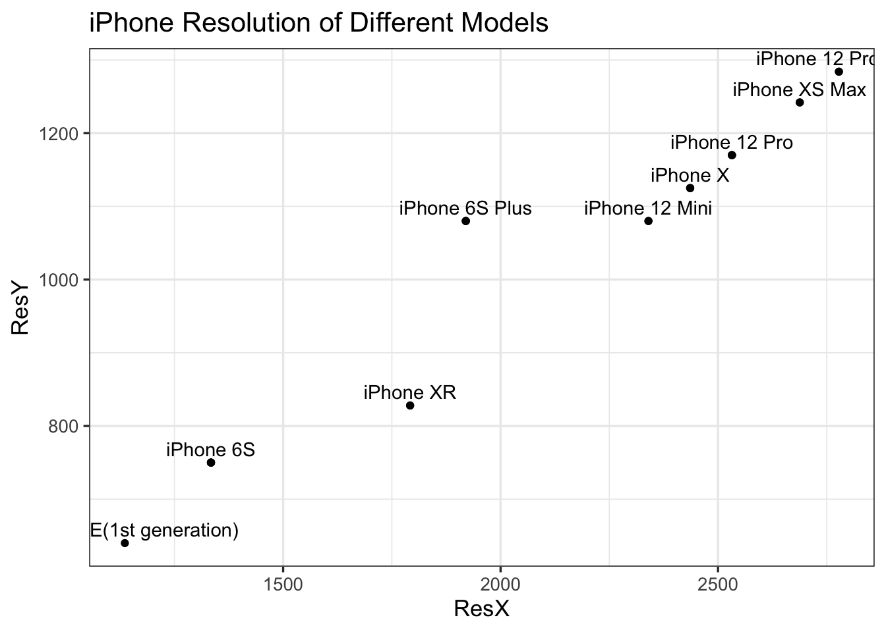
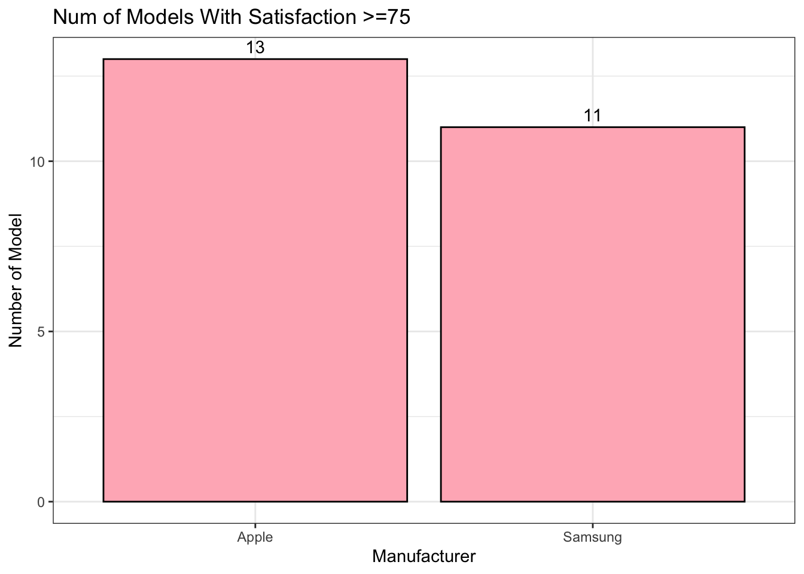

Chapter 5 Results
5.1 Different iPhone Features Changing
In order for us to better understand how products are changing to suit the public’s varying needs, it is necessary to examine the change of products’ features over the year. As an iconic figure among all Apple products, iPhone can be a typical product for our analysis. In this section, we will take deep analysis on the features of different generations of iPhone products, like the release date and discontinued date, display of the phone, and the rear camera mode. In our data cleaning section, we have obtained the data that contain those essential information, and we will utilize these data and a vast of R libraries including tidyverse, rvest, robotstxt, patchwork, naniar, janitor, and vistime to help our exploratory analysis.
5.1.1 Release and Discontinued Date
Before we dive into the various features of the iPhone, we want to present a roadmap of when each iPhone was produced and when it was discontinued from production. For our purpose, we utilize the vistime library to draw the visualization.
Vistime allows us to interact with the graph. If we point at the box where each iPhone is located, we can clearly see when the iPhone is produced and when it’s discontinued. As we can see from the graph, the earliest iPhone was produced in 2008, and it is the first generation of iPhone, but the product only lasts for one year. Similar fate can be seen on iPhone 3G or iPhone 5, where we can imply that Apple was facing certain challenges as they first started producing the iPhone product. As Apple continues on producing the iPhone products, we can see their production lasts longer than before, which may be caused by their more stabilized or newer technology. However, there is one thing we notice from the graph about the iPhone 4. Although it’s among one of the earliest iPhones, it’s production lasts comparatively longer than other early iPhones. Also, during the period of iPhone 4, Apple started producing iPhone more frequently and introducing more new types of iPhone. This tells us that iPhone 4 symbolizes one of the early successes in Apply history.

As we can see from the bar graph of numbers of the iPhones released in each year, we can see that Apple continues to release more and more iPhone products in the last 15 years. Apple reaches at most 5 models in 2020. In particular, the year 2013 can be seen as a growth point of iPhone models. Before 2013, Apple only released one model a year, but after 2013, Apple started releasing more than 2 models a year. We can imply that Apple reached success in making iPhone models in 2013, and they were more confident to produce more various models in the following years. This implication allows us to relate back to the findings we get at the end of the Vistime graph. As we said, iPhone 4 can be seen as one of the early successes in Apple history. And if we look back at the production period of iPhone 4, which is 2010-2013, we can see that the success of iPhone 4 perfectly matches the growth point of iPhone models.
5.1.2 iPhone Display Table
We found a dataset about the information of the display of each iPhone model. Given the dataset, we want to visualize the relationship among different iPhone features. Therefore, we provide a parallel coordinate plot for different iPhone models. Since the original dataset contains fairly detailed information about different features of iPhone models, for the sake of simplicity and clarity, we only selected a few important features for the public if they select the iPhones, including pixel density, aspect ratio, typical max brightness, contrast ratio, etc. To avoid the overlap of the feature names in the plot, we have abbreviated the feature names.
The graph shows a wide range of changes in different features, but we can still see that the iPhones produced in later years have more advanced and complete feature settings. For instance, iPhone 11 to iPhone 13 all have comparatively high pixel densities and aspect ratios. Some early iPhones like iPhone 6 and iPhone 7 lack a lot of features like ProMotion Display, True Tone Display, etc. Overall, the features in the graph have a positive correlation with each other. For example, the iPhones with higher pixel densities also have higher aspect ratios.

Ignore the x-axis values. The x-axis value for each point is each iPhone model in the order of release time.
(We checked the overlap models, and only keep one of them.)
5.1.3 iPhone Rear Camera Table
For iPhone Rear Camera, we mainly care about some features as the following.
5.2 Apple Fianance Data Analysis

5.3 Customer Satisfaction
Apple and Samsung together dominated the individual brand rankings.


5.4 Smartphones Comparison
maybe remove?